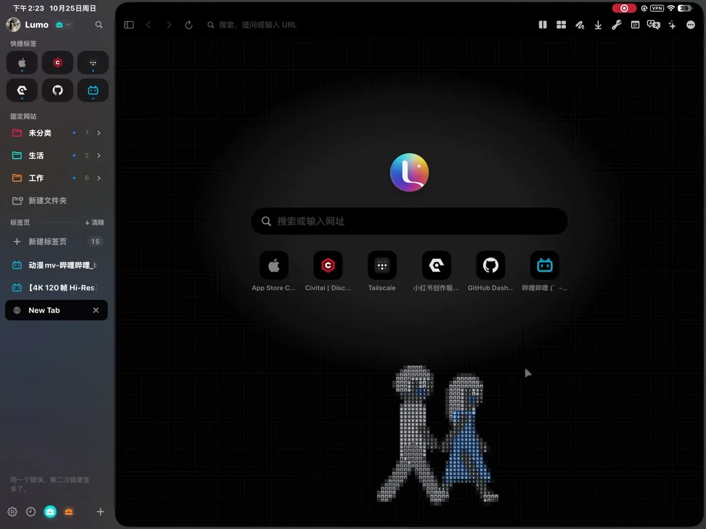
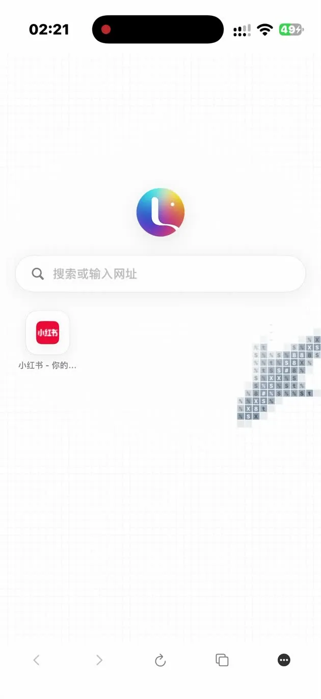

探索 Lumo 6.5
给浏览，
多一种可能。
不止打开网页。把不同账号、日常工具和下一件想做的事，放进属于你的浏览空间。
适用于 iPhone 与 iPad · iOS / iPadOS 18+ · 网页扩展需 18.4+


真实应用画面 · 布局随屏幕而变
NEW IN 6.5
打开新标签页，
一道光扫过来。
页面冲击波，用一道轻轻扫过的色彩迎接新页面。文字与界面像玻璃般折射，游鱼继续自在游动。
- 极光、光晕、冰霜、星火，四种配色。
- 强度、时长与起点可调，也能一键关闭。
- 适用于 iPhone 与 iPad，随深浅色外观呈现。
了解外观与动效设置 →
真实录屏 · 点击播放，可开启声音
Lumo 6.5 · 页面冲击波 · 约 37 秒 · 画面内为中文说明
FROM 6.0 TO 6.5
一步步，成为你的浏览器。
从空间与起始页，到手腕上的遥控，再到每次打开的一道光。回顾 6.0–6.5 的主要新功能。
6.0
把浏览整理成自己的空间
- iPhone 与 iPad 布局，适应不同屏幕与操作方式。
- 侧边栏空间横向切换，自选图标与颜色。
- 标签拖动排序、快捷固定与文件夹收纳。
6.1
起始页，开始有自己的样子
- 交互式 ASCII 起始页：游鱼、时钟、星座、天气等场景。
- 「我的照片」字符背景，触控、搜索与快捷网站联动。
- 广告拦截、游戏键盘与本地 HTML 网页。
6.2
抬起手腕，继续浏览
- Apple Watch 遥控滚动、缩放、音量与视频播放。
- 长文自动滚动，阅读时少一次伸手。
6.3
空间分开，工具连起来
- Profile 独立登录，同一网站分别使用不同账号；滑动进入无痕空间。
- 适配猫抓与 SingleFile，支持篡改猴 WebDAV 同步及 ZIP / JSON 导入。
- 网页深色适配、自定义磨砂水印与工具栏排序。
- 网页监控增加 1、5、10 分钟检查间隔。
6.4
把日常细节，打磨得更顺
- 左右侧边栏与网页尺寸同步过渡，加载提示更轻。
- 网页深色适配可单独开关，并保留单网站外观选择。
- 改进 SingleFile 与柠檬起始页兼容性，优化音视频和网页跳转。
- 阅读列表支持一键添加，导入书签指引与页面控制台更清晰。
6.5
每次打开，都有一道光
- 页面冲击波扫过新标签页，带来色彩、折射与边缘光泽。
- 四款主题，支持强度、时长、起点与触发方式设置。
- 动态起始页保持鲜活，效果结束后自然回到浏览。
- 修复部分网站深色适配持续高频检查的问题，减少无意义的后台工作。
部分功能属于 Lumo Pro；具体支持情况以 App 内显示为准。
ROOM TO THINK
手机轻巧，
宽屏从容。
工具在身边，思路留在网页上。
侧边栏，是你的工作台
标签、固定网站、文件夹与空间集中收纳。iPhone 从左边缘向右滑即可打开；iPad 用妙控键盘、触控板与 Apple Pencil，操作更自在。
两张网页，一起思考
在宽屏上将标签拖到网页左侧或右侧，并排阅读、对照资料。iPhone 默认移动版网页，iPad 默认桌面版，也能按站点切换。
读、译、记，再继续
阅读模式、原位翻译、页面笔记与批注，让研究不断线。专业工具箱与媒体视图帮助整理图片、链接和表格。
AI，由你选择服务
配置自己的 API Key，让助手总结、解释或比较网页。相关内容直接发送至你选择的服务，不经过 Lumo 服务器。
MAKE YOURSELF AT HOME
从第一张标签页，
到自己的浏览方式。
YOURS, BY DESIGN
你的数据，留在你的掌握中。
Lumo 没有自己的服务器。浏览资料默认保存在设备上；开启同步与备份后，所选内容使用你的 iCloud。AI、扩展和网站各自遵循其服务与权限设置。
了解备份与恢复 →
不一样的浏览器，
留给你慢慢发现。
开始使用 Lumo ↗
部分功能属于 Lumo Pro；可在 App 内查看方案与恢复购买。